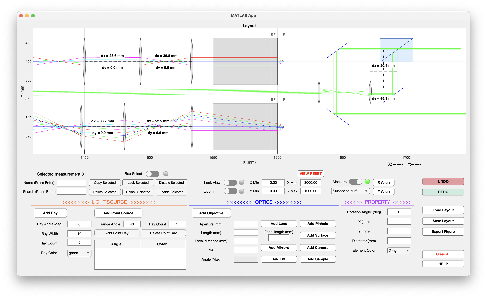

v1.1 · macOS & Windows
Optical layouts,
built visually.
COSMIC OptiLayout is an interactive optical layout design and 2D ray-tracing tool developed in MATLAB for research laboratories.

COSMIC OptiLayout is an interactive optical layout design and 2D ray-tracing tool developed in MATLAB for research laboratories.

Quickly build, visualize, measure, and export 2D optical layouts. COSMIC OptiLayout is designed for experimental optics, lab planning, discussion, documentation, and presentation figures.
Visualize optical paths interactively while editing sources and components.
Adjust angle, beam width, ray count, emission range, and ray color.
Lens, Objective, Mirror, Beam Splitter, Pinhole, Camera, and Surface.
Control position, rotation, diameter, focal length, numerical aperture, and aperture size.
Measure point-to-point and surface-to-surface distances directly in the layout.
Save layouts as PNG or PDF for reports, slides, and lab documentation.
Automatically align selected components along X or Y directions.
Save/load layouts, undo/redo, box selection, zoom, pan, and view lock.
A visual workspace for designing optical systems with editable components and interactive ray tracing.
Download the latest precompiled release for your operating system from GitHub Releases.
If macOS reports that MyAppInstaller_mcr.app is damaged and cannot be opened, this is caused by macOS Gatekeeper. The installer is not actually damaged.
Open Terminal and run:
xattr -dr com.apple.quarantine
Then drag MyAppInstaller_mcr.app into the Terminal window to insert its path, press Enter, and launch the installer again.